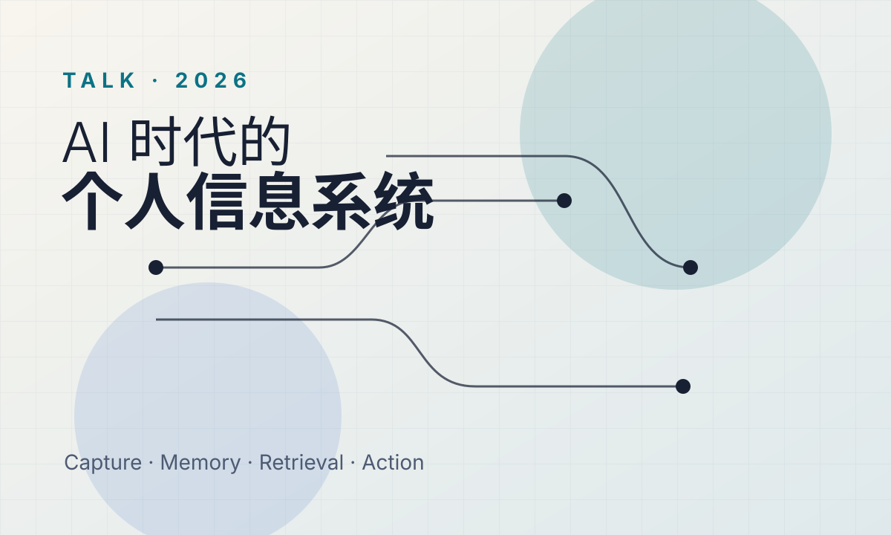

Personal Information Systems in the AI Era
45-minute talk · HTML slides
A talk for finance and technology professionals, showing how capture, knowledge bases, agents, project incubation, and safety boundaries can form a working personal information system.
Open item